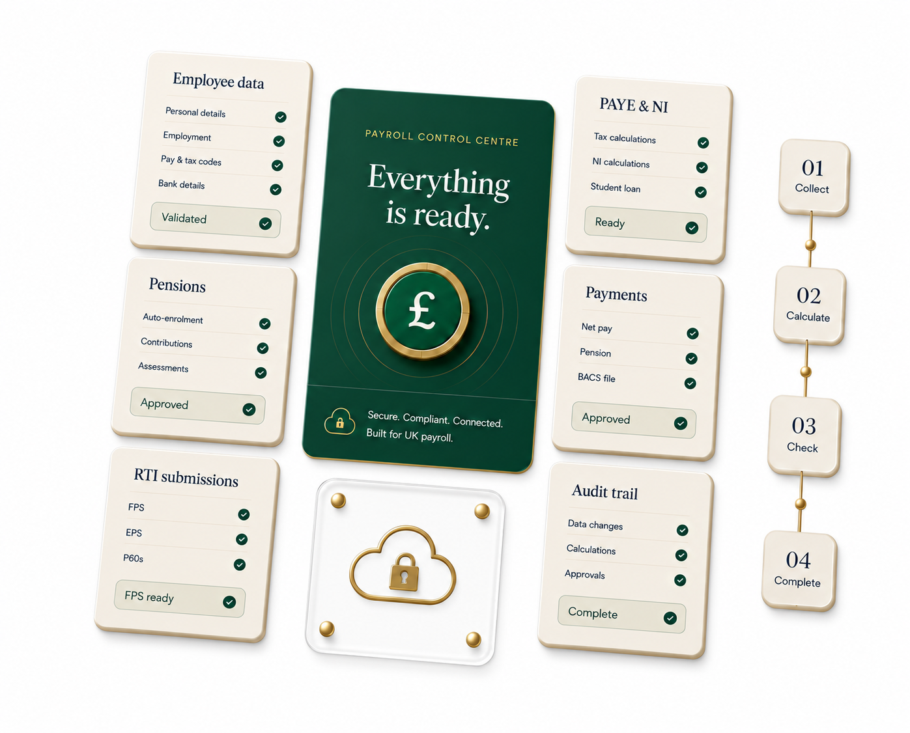

Process
Run the payroll.
Oceans Pay combines UK payroll processing with multi-company management, intelligent validation, automation and operational visibility — giving payroll teams one connected environment for the work surrounding every pay run.

Oceans Pay brings the essential parts of modern payroll together without turning the platform into a collection of disconnected tools.
Run the payroll.
Identify what needs attention.
Manage review, access and responsibility.
Reduce repetitive work.
Keep payroll information visible and useful.
Manage the day-to-day requirements behind UK payroll from one connected environment.
Manage multiple employers and payrolls without treating every company as an isolated operation.
Know what is ready, what is waiting and what requires attention without opening every payroll individually.
Explore Bureau CapabilitiesBring validation into the payroll process so teams can focus their review where it matters.
Intelligence helps surface the issue. Payroll professionals remain in control of the decision.
Use automation where repeating the same task manually adds effort without adding control.
Automate the repetition. Keep control of the payroll.
Keep payroll results and operational information accessible to the teams that need them.
Keep payroll access structured around the responsibilities of the people using the system.
Oceans Pay is designed for teams managing multiple companies, pay frequencies, users and deadlines.
Bring payrolls into one operating view, focus attention on exceptions and use consistent processes across the portfolio.
Oceans Pay provides a structured migration process designed to help bring existing payroll information into the platform, map it to the right structure and identify data requiring review before moving forward.
Oceans Pay supports the core requirements behind UK payroll while keeping validation, permissions and activity connected to the payroll process.
Tell us how you currently manage payroll and we'll show you the areas of the platform most relevant to your team.